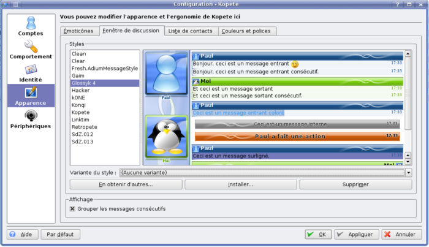

Kopete est un logiciel de messagerie instantanée intégré à KDE qui supporte AIM, ICQ, MSN, Yahoo, Jabber, IRC, Gadu-Gadu, etc. Sa particularité est qu'il est très simple d'utilisation et très personnalisable. La personnalisation se fait sous forme de thèmes qui peuvent être téléchargés ou tout simplement créés. Concernant la création d'un thème d'un logiciel KDE, vous avez peut-être déjà vu Créer un thème pour SuperKaramba de Dark-Side.
Je vous rassure : la création d'un thème pour Kopete est très simple :) ; en effet, les seules connaissances requises sont la maîtrise du XHTML et du CSS.
Avant de nous lancer dans la réalisation d'un thème, nous allons étudier sa structure.
Où sont-ils ?
Tout d'abord, les thèmes se situent dans 2 dossiers différents :
/usr/share/apps/kopete/styles contient les thèmes par défaut livrés avec Kopete ;
/home/votrenom/.kde/share/apps/kopete/styles contient les thèmes que vous avez téléchargés.
Comment sont-ils composés ?
Un thème est composé de dossiers et de fichiers sous cette forme-là :
MonStyle .....
Contents .........
Info.plist .........
Resources ..............
main.css ..............
Header.html ..............
Footer.html ..............
Status.html ..............
Incoming .................
Action.html (Facultatif) .................
Content.html .................
NextContent.html ..............
Outgoing .................
Action.html (Facultatif) .................
Content.html .................
NextContent.html ..............
Variants .................
*.css
:D Ça vous fait peur ? Je vais alors tout reprendre avec des explications.
Info.plist : ce fichier n'est pas nécessaire pour Kopete mais si vous voulez utilisez votre thème pour Adium, il faut absolument le remplir. main.css : pas trop compliqué, c'est le fichier qui contient tout le CSS. Header.html : généralement, c'est dans ce fichier que l'on place l'avatar du destinaire et le vôtre, etc. Footer.html : si vous voulez mettre un footer. Si vous ne voulez pas en mettre, laissez ce fichier vide. :) Status.html : contient le XHTML pour les actions internes.
Incoming : ce dossier contient les fichiers XHTML pour la présentation des messages envoyés par votre destinataire. Action.html : quand le destinataire fait /me... Content.html : fichier très important qui présente la disposition du message de votre destinataire. NextContent.html : fichier qui doit présenter les messages consécutifs : dans certains thèmes, ils sont groupés sous un même pseudo. Une conversation ressemble alors à ça :
Destinataire
Salut
Ca va ?
Ah tu n'es pas là ?
-- Moi --
Si, si
Je termine juste mon truc
Outgoing : ce dossier contient les fichiers XHTML pour la présentation de vos messages. Action.html : quand vous faites /me... Content.html : fichier très important qui présente la disposition de vos messages.
Variants : ce dossier est facultatif, si vous voulez mettre plusieurs versions de votre .css, vous y mettez vos feuilles de styles avec un nom clair de préférence, exemple : MonStyle Couleur Inverse.css.
Maintenant qu'on sait comment est structuré un thème, on va enfin pouvoir remplir nos pages. :D
Pour la partie CSS, vous allez devoir utiliser des div et des span avec des classes ou des id ; c'est totalement quartier libre sur ce sujet. :)
Par contre, pour afficher les différentes informations comme le nom du destinataire, son message, la date, ... nous allons utiliser des variables prédéfinies. Les variables sont sous la forme %variable% et à intégrer directement dans le XHTML pour exemple :
<div class="x">%variable%</div>
Header et Footer
%destinationName% : pseudonyme du destinataire.
%sourceName% : votre pseudonyme.
%incomingIconPath% : URL de l'avatar du destinataire. Ne vous inquiétez pas, mettez juste
%outgoingIconPath% : URL de votre avatar, fonctionne comme %incomingIconPath%.
Si on récapitule, on a 2 groupes de variables :
Destinataire
Vous
%destinationName%
%sourceName%
%incomingIconPath%
%outgoingIconPath%
%timeOpened{ ... } % : temps depuis le début de la conversation, remplacez ... par des variables de types %x pour choisir le format de l'heure, tapez
man strftime
dans Konsole ou autre pour avoir toutes les variables. Par exemple :
%timeOpened{%H:%M:%S}%
donnera l'heure, les minutes et les secondes.
C'est tout pour le header ou pour le footer. :)
Content et Action
%userIconPath% : avatar de l'utilisateur.
Hein ? Mais quel utilisateur ? Pour le header, il y a une variable pour le destinataire et une pour l'expéditeur.
En effet, mais n'oubliez pas, Content.html et Action.html sont dans les dossiers Incoming et Outgoing ; ainsi, le Content.html du dossier Incoming affichera l'avatar du destinataire alors que le Content.html du dossier Outgoing affichera votre avatar. ^^
%senderScreenName% : ID de l'utilisateur ; si c'est MSN par exemple, ce sera [email protected], etc.
%sender% : pseudonyme visible dans la liste des contacts.
%service% : affiche le service (MSN, Yahoo, Jabber, ICQ, ...).
%time{ ... }% : affiche la date, fonctionne comme %timeOpened{ }.
%message% : le plus important bien sûr, il affiche tout simplement le message.
Voilà pour les messages. :)
Status
Pour ceux qui n'ont toujours pas compris le rôle de Status.html, je vais un peu mieux l'expliquer. Il s'agit des messages internes de Kopete comme par exemple, quand vous envoyez un fichier, vous avez « Incoming File Transfer » : c'est tout simplement ça. ^^
La liste est la même que pour Content.html et Action.html.
À présent, nous avons toutes les connaissances requises pour coder notre joli thème. :D
Récapitulatif : nous avons des fichiers XHTML et un fichier CSS. En conséquence, on va utiliser du XHTML et du CSS pour faire nos pages. À cela nous allons ajouter des variables pour construire nos informations.
/home/votrenom/.kde/share/apps/kopete/styles contient les thèmes par défaut livrés avec Kopete
Rendez-vous dans le dossier styles/.
À la fin de la première sous-partie, j'ai mis à disposition un .zip contenant les fichiers nécessaires. Dezippez puis placez-le dans /home/votrenom/.kde/share/apps/kopete/styles et enfin renommez-le comme vous souhaitez. Puis allez sur Kopete et faites Configuration -> Configurer... -> Fenêtre de discussions et hop ! surprise. ^^
Bon voilà, vous pouvez coder à présent. ^^
...
En effet : quand on modifie nos pages, il ne se passe rien sur Kopete.
Il y a alors 2 solutions : soit on prend konqueror, on va dans /home/votrenom/.kde/share/apps/kopete/styles , on prend notre dossier, on fait Copier -> Coller avec un autre nom et là, il réapparaît dans la liste avec les nouvelles modifs. C'était la solution très barbare. :D
Une histoire de cache
En effet, ce problème d'affichage des nouveautés vient du cache de Kopete. Heureusement, il y a une autre solution. :)
Protocole :
ouvrez Konsole ;
tapez kdesu kate ;
entrez votre mot de passe ;
allez dans /usr/share/kubuntu-default-settings/kde-profile/default/share/config/ ;
ouvrez kopeterc ;
rajoutez à la fin du fichier :
[KopeteStyleDebug]
disableStyleCache=true
Et voilà : maintenant, quand on modifie, on peut voir les modifications. ^^
Variante de style
Plus haut, j'ai parlé d'un dossier /Variants/ qui contient des versions différentes de votre main.css : pour mieux comprendre, regardez par exemple le thème Glossyk 4 :

Regardez Variante du Style, j'ai mis Aucune, les messages du destinataires sont bleus, les miens verts et puis je vais sélectionner une variante :
Hop ! Le style est le même mais les couleurs ont changé !
J'ai demandé à ce que le nom du fichier soit très clair car regardez, ici ma variante de style s'appelle [ ] Compact : [ ] Avatar Bar : Chess (Black & White ) ; ce n'est qu'en réalité le nom du fichier : [ ] Compact : [ ] Avatar Bar : Chess (Black & White ).css .
Bonus
Bon : voici un petit bonus car vous l'avez bien mérité. :-° Il peut arriver que votre contact, ou même vous, n'ayez pas d'avatars, il n'y aura donc pas d'avatar dans votre belle fenêtre de discussion et, pour les plus maniaques d'entre nous, c'est moche quand c'est vide. :D Pour remédier à cela, créez une image 100 * 100 et PNG :
Puis enregistrez-la sous le nom buddy_icon.png dans le dossier de votre thème ; dans Incoming si c'est pour le destinataire, ou Outgoing si c'est pour vous.
Et voilà : si votre contact n'a pas d'avatar, c'est remplacé par buddy_icon.png .
Cette dernière sous-partie était plutôt incertaine mais, j'ai quand même décidé de la faire. :p
Nous allons donc créer notre thème de smilies, si vous n'aimez pas ceux par défaut ->
Où sont les smilies ?
Les smilies téléchargés sont situés dans /home/votrenom/.kde/share/emoticons. Faites Nouveau dossier et appellez-le sdz. Puis mettez-y les émoticones du Site Du Zéro, par exemple. Ou alors télécharger le Thème Sdz d'emoticones pour Kopete. Décompressez-le dans /home/votrenom/.kde/share/emoticons puis faites Configurer -> Apparence -> Emoticones depuis Kopete. Et sélectionnez sdz.
Le fichier XML
Pour indiquer à Kopete quelle émoticone utiliser pour quelle commande, il faut un fichier XML que l'on va appeller emoticons.xml et que l'on va placer dans le dossier où il y a nos émoticones ; ce fichier doit contenir :
<?xml version="1.0"?>
<messaging-emoticon-map >
<emoticon file="smile"> // mettez ici le nom du fichier sans son extension, par exemple smile et pas smile.png.
<string>:-)</string> // Ici, les commandes qui vont être remplacées, il peut y en avoir plusieurs.
<string>:)</string>
<string>:]</string>
</emoticon>
<emoticon file="heureux">
<string>:D</string>
</emoticon>
</messaging-emoticon-map>
Voilà : le tutoriel est terminé.
Quand j'ai découvert Kopete, les thèmes ne me plaisaient pas trop ; j'ai alors créé le mien et puis j'ai décidé de faire un tutoriel à ce sujet. J'espère qu'il a été clair et plutôt bon dans l'ensemble. :)
N'oubliez pas les notes et bien sûr, les commentaires.